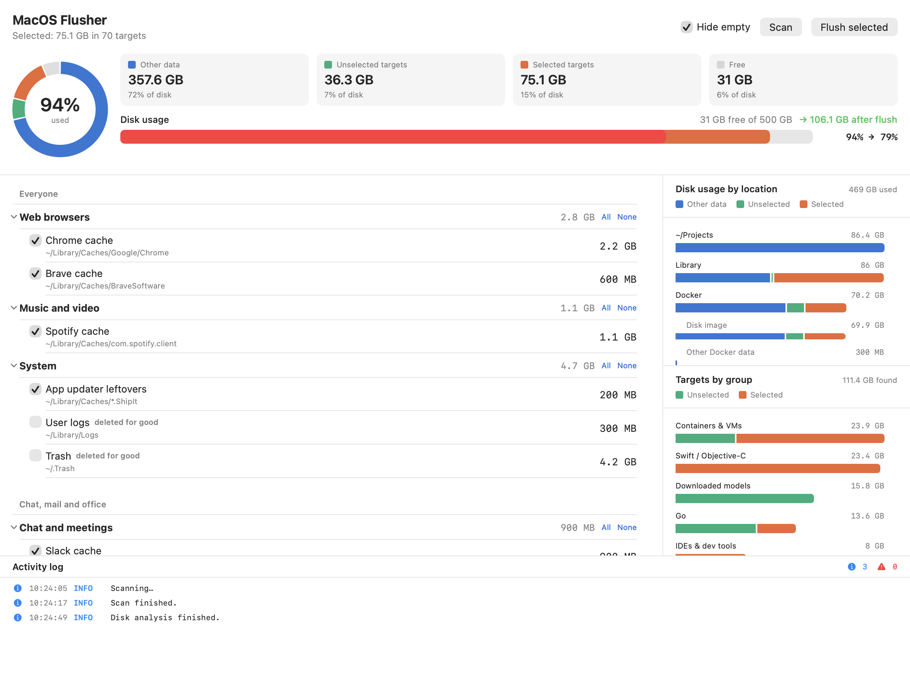
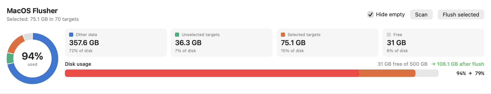
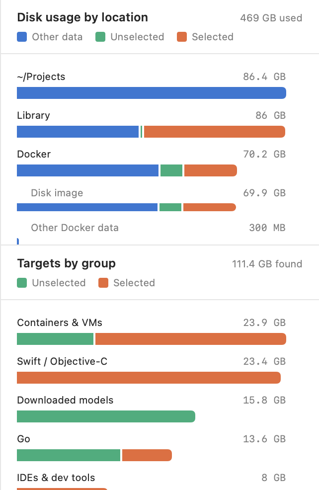
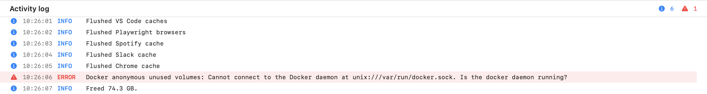

MacOS Flusher
Get your disk space back. A small Mac app that finds the caches your developer tools leave behind, shows what fills the disk and deletes what you choose.
- # Install the latest release. Opens without a security prompt.
-
curl -fsSL https://raw.githubusercontent.com/bircex/macos-flusher/main/install.sh | bash - # Downloaded the DMG with a browser? Allow the app to open.
-
xattr -dr com.apple.quarantine "/Applications/MacOS Flusher.app"

Features
One window shows what takes the space, what is safe to delete and what the disk looks like afterwards.
Every stack in one list
npm, pip, Go, Cargo, Gradle, Xcode, Docker, Homebrew, JetBrains, VS Code and many more, grouped by ecosystem.
Measure first, delete second
Every cache is measured before anything is removed. The disk bar shows how full the disk is now and after the flush.
See what fills the disk
Charts break the disk down by location and by target group. The Docker disk image has its own row.
Safe defaults
Caches that are slow to rebuild or hold your data start unselected. Named Docker volumes and projects are never touched.
Each tool cleans itself
Where a tool has a cleanup command, the app runs it. go clean, npm cache clean and docker prune do the deleting.
Native and private
Written in SwiftUI. The app makes no network requests, has no account and collects nothing.
How it works
Three steps. Nothing is deleted until you confirm the last one.
01
Scan
The app measures every cache as soon as it opens. The overview shows how the disk is split between your data, caches and free space.

02
Choose
Tick the caches you want to delete. The charts show where the space is and how much of it you have selected.
- Select or clear a whole group at once
- The disk bar shows the change before you make it
- Hover a bar to see the exact sizes

03
Flush
Press Flush selected and confirm. The app works through the caches one by one and measures each again, so the list shows what is really left. Every step is logged, failures with the message from the tool.

What it cleans
90 targets in 18 groups, with the exact folder or command for each. Open a group to see every folder that is emptied and every command that is run.
Everyone
Web browsers3 targetsChrome, Brave, Edge
- Chrome cache~/Library/Caches/Google/Chrome
- Brave cache~/Library/Caches/BraveSoftware
- Edge cache~/Library/Caches/Microsoft Edge
Music and video1 targetSpotify
- Spotify cache~/Library/Caches/com.spotify.client
System3 targetsApp updater leftovers, user logs, Trash
- App updater leftovers~/Library/Caches/*.ShipIt
- User logs~/Library/LogsOff by default, deleted for good
- Trash~/.TrashOff by default, deleted for good
Chat, mail and office
Chat and meetings1 targetSlack
- Slack cache~/Library/Application Support/Slack/Cache~/Library/Application Support/Slack/Service Worker/CacheStorage
AI models
Downloaded models3 targetsHugging Face, PyTorch, Ollama
- Hugging Face hub~/.cache/huggingfaceOff by default, slow to get back
- PyTorch hub~/.cache/torchOff by default, slow to get back
- Ollama models~/.ollama/modelsOff by default, slow to get back
Developers
JavaScript / TypeScript10 targetsnpm, Yarn, pnpm, Bun, Deno, Corepack, nvm, node-gyp, Electron, Turborepo
- npm cache$ npm cache clean --force
- Yarn cache~/Library/Caches/Yarn~/.yarn/cache~/.yarn/berry/cache
- pnpm store~/Library/pnpm/store~/Library/Caches/pnpm~/.pnpm-store
- Bun install cache~/.bun/install/cache
- Deno cache~/Library/Caches/deno
- Corepack cache~/.cache/node/corepack
- nvm download cache~/.nvm/.cache
- node-gyp headers~/Library/Caches/node-gyp~/.node-gyp
- Electron downloads~/Library/Caches/electron~/.electron~/Library/Caches/electron-builder
- Turborepo cache~/Library/Caches/turborepo~/.turbo
Python8 targetspip, uv, Poetry, Pipenv, pipx, Conda, Ruff, pre-commit
- pip cache~/Library/Caches/pip
- uv cache~/.cache/uv
- Poetry cache~/Library/Caches/pypoetry
- Pipenv cache~/Library/Caches/pipenv
- pipx cache~/.local/pipx/.cache
- Conda package cache~/miniconda3/pkgs~/anaconda3/pkgs~/miniforge3/pkgs~/.conda/pkgs
- Ruff cache~/Library/Caches/ruff~/.cache/ruff
- pre-commit environments~/.cache/pre-commit
Go3 targetsBuild cache, module cache, gopls, goimports, golangci-lint, staticcheck
- Go build cache$ go clean -cache
- Go module cache$ go clean -modcacheOff by default, slow to get back
- Go tools (gopls, goimports, golangci-lint, staticcheck)~/Library/Caches/gopls~/Library/Caches/goimports~/Library/Caches/golangci-lint~/Library/Caches/staticcheck
Rust3 targetsCargo registry and git, rustup downloads, sccache
- Cargo registry & git~/.cargo/registry/cache~/.cargo/registry/src~/.cargo/git
- rustup downloads~/.rustup/downloads~/.rustup/tmp
- sccache~/Library/Caches/Mozilla.sccache~/.cache/sccache
JVM (Java, Kotlin, Scala, Clojure, Android)6 targetsGradle, Maven, Coursier, sbt, Ivy, Kotlin, Android, Bazel
- Gradle caches~/.gradle/caches~/.gradle/daemon
- Maven repository~/.m2/repositoryOff by default, slow to get back
- Coursier / sbt cache~/Library/Caches/Coursier~/.cache/coursier~/.sbt/boot~/.ivy2/cache
- Kotlin daemon & konan~/.kotlin~/.konan/cache
- Android build cache~/.android/cache~/.android/build-cache
- Bazel cache~/.cache/bazel/private/var/tmp/_bazel_*Off by default, slow to get back
.NET2 targetsNuGet packages and HTTP cache
- NuGet packages~/.nuget/packagesOff by default, slow to get back
- NuGet HTTP cache~/.local/share/NuGet/http-cache~/.nuget/v3-cache
Swift / Objective-C6 targetsXcode DerivedData, DeviceSupport, Simulator, Swift PM, CocoaPods, Carthage
- Xcode DerivedData~/Library/Developer/Xcode/DerivedData
- Xcode iOS DeviceSupport~/Library/Developer/Xcode/iOS DeviceSupportOff by default, slow to get back
- iOS Simulator caches~/Library/Developer/CoreSimulator/Caches
- Swift PM cache~/Library/Caches/org.swift.swiftpm
- CocoaPods cache~/Library/Caches/CocoaPods
- Carthage cache~/Library/Caches/carthage~/Library/Caches/org.carthage.CarthageKit
Ruby / PHP / Perl / Lua4 targetsRubyGems, Bundler, Composer, CPAN, LuaRocks
- RubyGems & Bundler cache~/.gem/specs~/.gem/ruby/*/cache~/.bundle/cache
- Composer cache~/.composer/cache~/Library/Caches/composer~/.cache/composer
- CPAN build & sources~/.cpan/build~/.cpan/sources~/.cpanm/work
- LuaRocks cache~/.cache/luarocks
Elixir / Erlang / Haskell / OCaml5 targetsHex, rebar3, Cabal, Stack, opam
- Hex package cache~/.hex~/.cache/hex
- rebar3 cache~/.cache/rebar3
- Cabal packages~/.cabal/packages~/.cache/cabal
- Stack indices~/.stack/indices~/.stack/pantryOff by default, slow to get back
- opam download cache~/.opam/download-cache
C / C++3 targetsccache, Conan, vcpkg
- ccache~/Library/Caches/ccache~/.ccache~/.cache/ccache
- Conan packages~/.conan2/p~/.conan/data
- vcpkg cache~/.cache/vcpkg~/Library/Caches/vcpkg
Dart, Zig, Nim, Julia, R, Crystal, D7 targetspub, Zig, Nim, Julia, R, Crystal, dub
- Dart / Flutter pub cache~/.pub-cacheOff by default, slow to get back
- Zig cache~/.cache/zig
- Nim cache~/.cache/nim~/.nimble/pkgcache
- Julia compiled cache~/.julia/compiled~/.julia/logs
- R cache~/Library/Caches/org.R-project.R~/.cache/R
- Crystal cache~/.cache/crystal
- D dub packages~/.dub/packages
Containers & VMs9 targetsDocker, Podman, minikube, Vagrant, Lima, Colima
- Docker build cache$ docker builder prune -af
- Docker dangling images$ docker image prune -f
- Docker unused images (all)$ docker image prune -afOff by default, slow to get back
- Docker anonymous unused volumes$ docker volume prune -f
- Docker stopped containers$ docker container prune -fOff by default, deleted for good
- Podman unused data$ podman system prune -afOff by default, deleted for good
- minikube cache~/.minikube/cacheOff by default, slow to get back
- Vagrant boxes~/.vagrant.d/boxesOff by default, slow to get back
- Lima / Colima cache~/Library/Caches/limaOff by default, slow to get back
IDEs & dev tools13 targetsHomebrew, JetBrains, VS Code, Cursor, Playwright, Cypress, Puppeteer, Terraform, Pulumi, Helm, AWS CLI, Claude Code, Codex
- Homebrew downloads$ brew cleanup --prune=all -s
- JetBrains caches~/Library/Caches/JetBrains
- VS Code caches~/Library/Application Support/Code/Cache~/Library/Application Support/Code/CachedData~/Library/Application Support/Code/CachedExtensionVSIXs
- Cursor caches~/Library/Application Support/Cursor/Cache~/Library/Application Support/Cursor/CachedData
- Playwright browsers~/Library/Caches/ms-playwright
- Cypress binaries~/Library/Caches/Cypress
- Puppeteer & Chrome DevTools browsers~/.cache/puppeteer~/.cache/chrome-devtools-mcp
- Terraform plugin cache~/.terraform.d/plugin-cache
- Pulumi plugins~/.pulumi/pluginsOff by default, slow to get back
- Helm cache~/Library/Caches/helm
- AWS CLI cache~/Library/Caches/aws
- Claude Code scratchpads/private/tmp/claude-*Off by default, deleted for good
- Codex caches~/Library/Caches/com.openai.codex~/.cache/codex-runtimes
Folders
Everything inside the folder is deleted. The folder itself stays. Entries with * delete every match.
Commands
The app runs the tool's own cleanup command and deletes nothing itself.
Never deleted
Named Docker volumes, images a container uses, and your projects with their build folders.
Install
macOS 13 or newer. One download for Apple Silicon and Intel.
First launch: allow the app to open
This applies only to a copy downloaded with a browser. The app is signed locally but not notarized by Apple, so macOS blocks the first launch and says the app could not be verified. The one command install skips this step.
macOS 15 Sequoia and newer
- Open the app once and close the message.
- Open System Settings, then Privacy & Security.
- Scroll down to Security and click Open Anyway.
- Confirm with your password or Touch ID.
macOS 13 Ventura and macOS 14 Sonoma
- In Applications, hold Control and click MacOS Flusher.
- Choose Open, then click Open in the dialog.
From Terminal, on any version
xattr -dr com.apple.quarantine "/Applications/MacOS Flusher.app"
Verify a download
Every release ships a SHA256SUMS file. The command prints MacOS-Flusher.dmg: OK when the file is intact.
cd ~/Downloads curl -fsSLO https://github.com/bircex/macos-flusher/releases/latest/download/SHA256SUMS grep MacOS-Flusher.dmg SHA256SUMS | shasum -a 256 -c -
Update and uninstall
The app does not update itself. Install the new version the same way you installed the first one. The version is shown under MacOS Flusher, About MacOS Flusher in the menu bar.
To uninstall, quit the app and delete it from Applications. The app keeps no data of its own. macOS stores the window position in ~/Library/Preferences/com.bircex.MacOSFlusher.plist, which you can delete as well.
Privacy
Everything stays on your Mac. No network requests, no account, no analytics. The source code is public, so every statement here can be checked.
What the app reads
- The size of each cache folder
- What Docker reports as reclaimable
- The size of your home folders, Applications and system folders
- Total and free disk space
What the app changes
- It deletes only what you select, after you confirm
- It installs no helper, login item or background service
- It never asks for an administrator password
- It does not ask for Full Disk Access
| macOS asks for access to | Used for | If you decline |
|---|---|---|
| Desktop folder | Size of Desktop | Counted under Everything else |
| Documents folder | Size of Documents | Counted under Everything else |
| Downloads folder | Size of Downloads | Counted under Everything else |
| Data from other apps | Size of app data in your Library | Counted under Everything else |
FAQ
Start with the activity log. Every failed step is listed there.
macOS says the app could not be verified
The app is not notarized by Apple, and macOS blocks copies downloaded with a browser. Follow the first launch steps under Install, or install with the one line command, which skips the prompt.
A Docker cache fails with "Cannot connect to the Docker daemon"
Docker is installed but not running. Start Docker Desktop, wait until it is ready and press Scan.
A Docker cache fails with "read-only file system"
This happens after the Mac ran out of disk space while Docker was running. Docker's virtual disk switches to read-only to protect itself and stays that way, even after space is free again.
- Free some space first by flushing the caches that are not from Docker.
- Quit Docker Desktop and start it again.
- Press Scan, then flush the Docker caches.
Databases and other containers that were writing when the disk filled up may have lost their last writes. Check them after Docker restarts.
A tool is shown as "not installed"
The app looks in /opt/homebrew/bin, /usr/local/bin, /usr/bin, /bin, ~/go/bin and ~/.cargo/bin, followed by the PATH of your login shell.
If a tool lives somewhere else, add that folder to PATH in ~/.zprofile, then quit and reopen the app.
The disk analysis stays at "Analyzing"
macOS is waiting for an answer to a folder access prompt. The prompt can be hidden behind other windows. Answer it and the analysis continues.
"Everything else" is very large
That row holds the used space the app could not attribute to a folder:
- Folders you did not allow the app to read
- Folders only the system can read, such as Mail and Messages data
- macOS recovery and startup volumes, and swap space
- Local snapshots that macOS keeps for a while after files are deleted
Sizes differ from Finder
The app measures the space files occupy on disk. Finder often shows the size of the file contents. The two differ for sparse files such as the Docker disk image, for iCloud files that are not downloaded and for files that share storage after a copy.
Less space was freed than I selected
- A cache failed. Look for ERROR lines in the log.
- A tool rebuilt part of its cache while the flush ran.
- macOS keeps deleted files in local snapshots for a while.
- Docker Desktop returns freed space to macOS with a delay. Restarting it usually helps.
A cache came back after the flush
That is expected. Caches are rebuilt the next time you install packages or build a project. Flush again when you need the space.
How are versions numbered?
Versions follow the calendar: year, month and the number of the release within that month. 2026.9.0 is the first release in September 2026 and 2026.9.3 is the fourth.
A new version is published automatically when a change to the app is merged. Each release has a disk image, a ZIP archive and a checksum file.
How do I add a target that is missing?
Adding a target is one line in Sources/MacOSFlusher/Targets.swift. Open a pull request on the project page, or open an issue with the folder or the cleanup command.